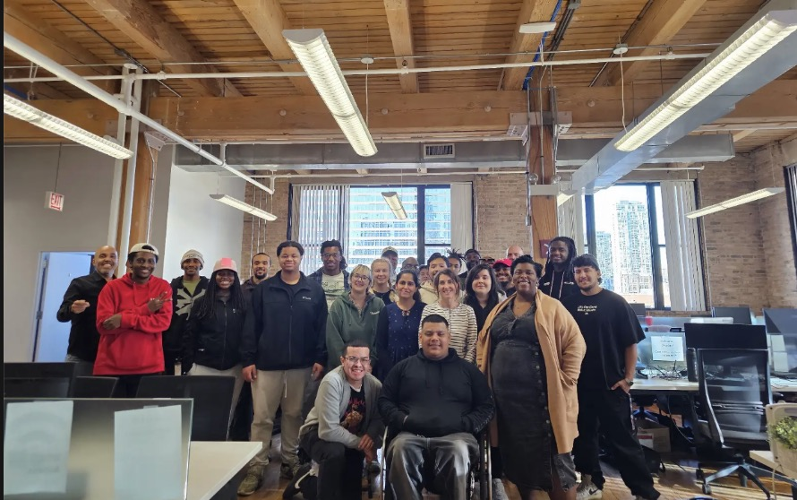

01 / GEEK WEEK
Geek Week — learning together
Geek Week was one of the experiences that challenged me to apply what I had been learning. Activities involving SQL, Excel, keyboard shortcuts, and timed tasks helped me see the importance of preparation, practice, and staying focused.
This group photo reminds me that even when we are working on individual skills, being surrounded by people who are learning and encouraging each other makes the experience more meaningful.
Explore my technology experience ↗